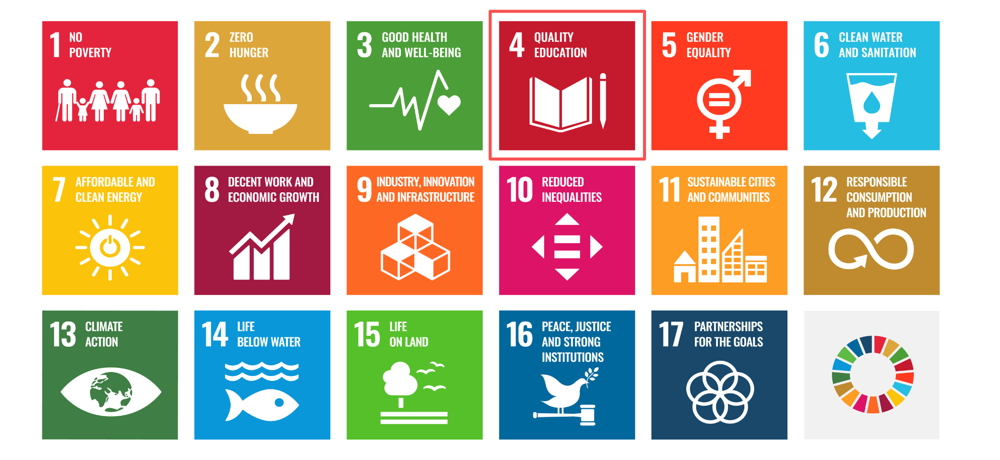
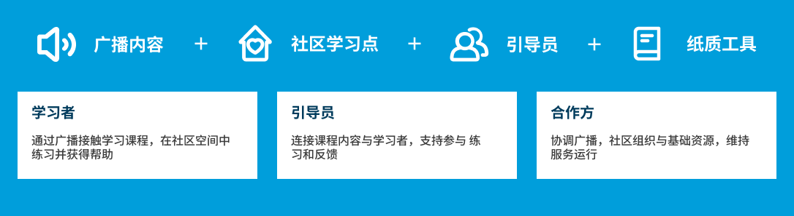
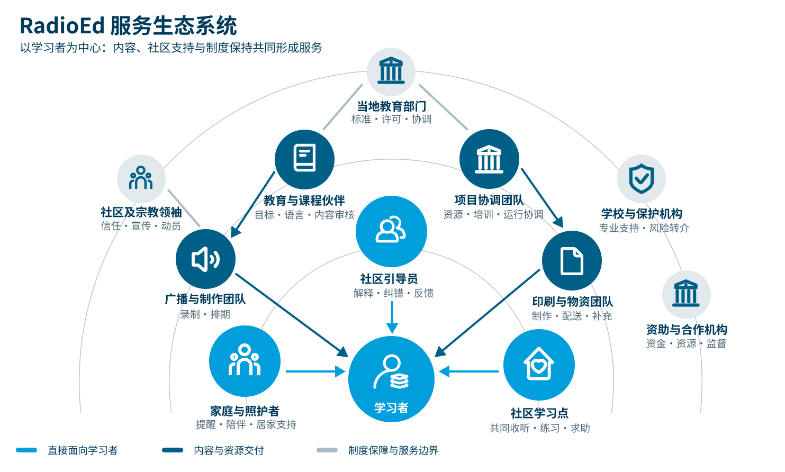
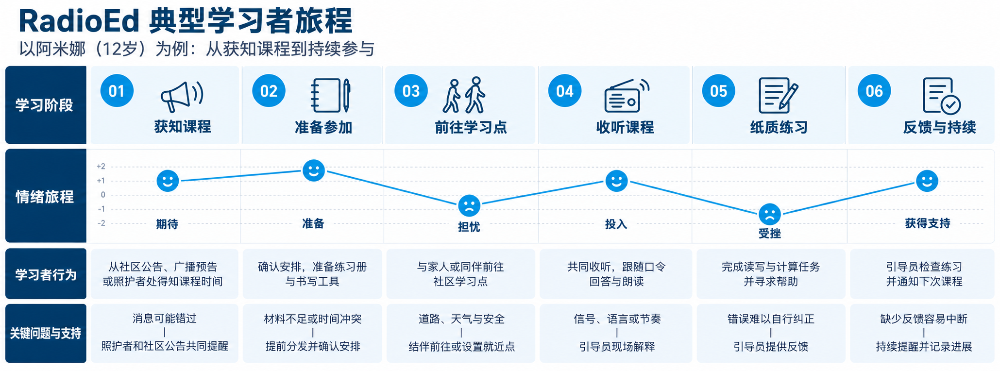

UNICEF 2026 年人道援助资料指出，中非共和国至少有 41% 的儿童无法获得学习机会。
项目案例 / 03← 返回作品
团队方案
中非共和国社区
离线学习服务
RadioEd：为中非共和国的低连接社区提出广播、社区学习点与纸质材料协同运作的基础读写学习服务概念。

在限制条件里，
重新定义“可达”.
数字学习方案常以持续联网和个人设备为前提。团队将问题转向另一种情境：当网络、设备和交通都可能成为门槛，学习服务如何以更熟悉、更可获得的渠道抵达社区？
UNESCO 2022 年国家资料显示，15 岁以上成人识字率为 37.5%；女性为 26.2%。
目标关注青年与相当比例的成年人获得读写和计算能力，因此概念不能只被理解为儿童课堂。
不同数据来自不同年份与统计口径，仅用于界定问题背景；具体试点地区仍需重新核验。
国家与实施情境
地理、道路与运输
中非共和国是人口分布稀疏的内陆国家，道路密度和铺装率较低；偏远地区在雨季更容易出现道路中断与物流延误。
电力、通信与设备
世界银行数据显示，2024 年全国电力可及率约为 18.2%；移动与互联网覆盖仍受电网、骨干网络和城乡差异限制。
供水、卫生与健康
UNICEF 指出，供水、卫生和洗手设施不足仍影响许多家庭、学校与医疗点；水源性疾病和健康事件会中断学习。
学校、教师与引导人员
部分地区存在班级拥挤、合格教师不足以及学校设施薄弱的问题，社区志愿者和家长教师可能承担补充支持。
语言与识字差异
法语和桑戈语在公共教育与传播中具有重要地位，不同地区还存在多种本地语言；学习者的口语、阅读和教学语言能力并不一致。
宗教与社区信任
国家法律确立世俗原则，社会包含基督宗教、伊斯兰教及传统信仰实践；宗教、族群与地区经历会影响机构信任和参与安全。
安全与人口流动
持续的不安全、跨境危机、内部流离失所和返乡，使部分社区的人口、服务需求与可达路线不断变化。
性别、年龄与保护
女性和女孩面临更高的性别暴力、早婚与教育中断风险；儿童、残障人士和少数群体还可能遇到身份、交通或信息障碍。
贫困、劳动与时间成本
世界银行估计约三分之二人口生活在极端贫困中，农村地区比例更高；交通费、材料费、家务和生计劳动都会影响持续参与。
气候、雨季与季节性
强降雨、洪水和季节性道路状况会影响广播设备维护、教材补给、人员移动与学习点开放。
广播生态与收听习惯
广播已被用于法语和桑戈语教育内容，但电台覆盖、频率、设备拥有、共同收听方式和可信主持人在各地并不相同。
治理、许可与合作网络
课程、广播、社区空间、物资、保护与监测涉及不同部门和组织，资金中断或职责不清都可能让服务停摆。
研究依据：世界银行国家概况、世界银行国家数据、UNICEF 人道行动资料、UNHCR 国家情况、ITU 通信概况及宗教自由背景报告。这些资料用于确定试点需验证的条件，不代表全国各地区完全相同。
难以稳定进入学校或使用数字教育资源，以及需要基础读写与计算支持的人群。
提供练习、解释、提醒与持续参与支持，把共同课程连接到日常学习。
不替代正式学校、合格教师、儿童保护或专业教育支持。
为什么以广播作为学习入口
选择广播不是因为它更先进，而是因为它对持续联网、个人智能设备和数字账户的依赖更低，更适合人口分散且连接条件不稳定的环境。
普通收音设备即可接收课程，也可以由家庭或社区组织共同收听。
同一节目能够把共同内容送到不同地区，减少学习者为获得课程而长距离移动。
固定播出、预告与重播能够建立可预期的学习时间，并连接后续练习。
局限：广播是单向且以声音为主，不能独立完成书写练习、解释和反馈，因此仍需纸质材料与社区引导员配合；实际覆盖、语言和收听习惯必须在当地验证。
设计不能只增加课程内容，还必须降低抵达、参与和持续学习的门槛
二手资料研究将教育障碍梳理为三类：冲突与流离失所打断学习；师资与基础设施不足削弱持续供给；贫困、劳动负担与性别差异影响实际参与。
比较已有路径，再组合各自的优势
技术辅助教学扩大内容获取，但仍需考虑设备与使用支持；社区辅导提供就近帮助，却依赖人员培训和持续资源；母语教学帮助理解，也需要相应教材。RadioEd 因此不是用广播替代所有教育服务，而是把传播渠道、纸质练习和本地支持组织在一起。
以上是从公开资料推导出的设计要求，不代表这些服务组件已被当地学习者接受或证明有效。
渠道可及
广播可覆盖更广区域，但单向传播不足以独立承担互动练习与反馈。
学习持续性
课程需要重复、练习、支持和追踪；一次性的内容投放不足以建立稳定的学习路径。
广播让内容抵达，
支持让学习发生.
RadioEd 将广播课程与社区学习点、引导员和纸质学习工具组合起来。广播提供共同的节奏，线下据点提供练习与支持，纸质材料让学习可以在课程之外继续。

广播传递的不只是信息，而是可以练习的基础能力
围绕字母与发音、常用词、短句理解和基础书写，帮助学习者建立日常阅读与表达能力。
涵盖数字识别、基础运算、数量比较，以及购物、时间和测量等生活计算情境。
结合健康、卫生、安全和社区生活中的实用信息，让读写与计算练习连接真实生活。
广播能够抵达，前提是这些责任有人承担
确定学习目标、语言与难度，审核内容并设计能够与纸质练习对应的广播课程。
录制、排期和重播课程，维护稳定的播出节奏，并提前向社区公布收听时间。
管理学习点、分发材料、组织练习、记录问题，并把无法处理的需求转介给教育伙伴。
负责培训、物资、成本、学习数据保护、参与安全以及不同合作方之间的运行协调。
角色划分是概念阶段的服务假设，具体机构、权限和资源配置必须由当地合作方共同定义。

共同入口广播课程与学习节奏
↓ 路径 A / 可以到场
社区共同学习
共同收听引导员解释与演示工具包练习与反馈
就近获得互动支持
↓ 路径 B / 难以定期到场
居家自主学习
居家收听领取纸质自学材料按课程节奏练习
降低到场门槛；求助支持仍待验证
共同评估读写变化持续参与学习者反馈
两条路径共享内容，但支持强度不同；不能假设自主学习适合所有人。

识别并书写常用词与数字
广播：用当地合作方确认的教学语言介绍发音、词义和生活场景，通过重复提示引导学习者翻到对应练习页。
纸质材料：提供图示、描摹、词语匹配与简单数量练习。
社区支持：引导员示范书写、观察练习、给予纠错，并记录普遍困难反馈给课程团队。
该示例只用于说明渠道如何配合；语言、内容和文化适切性必须与当地教育伙伴及学习者共同设计。把服务拆成学习者能走完的闭环
广播解决内容如何抵达，学习点解决练习与支持在哪里发生；要形成连续学习，还需要把“听到课程”连接到“尝试练习”“遇到困难时求助”和“知道下一次何时继续”。每个环节都依赖不同角色协作，任何一个环节断开，都可能让内容触达停留在一次性收听。
01 / 触达
内容抵达
广播作为共同入口传递课程与学习节奏。设计需考虑收听时间、重复收听和内容理解，不把“覆盖到信号”直接等同于“完成学习”。
02 / 练习
练习发生
纸质材料与社区学习点为听课后的练习提供落点。材料需要能脱离网络使用，也要便于引导员据此组织练习。
03 / 支持
问题得到回应
引导员承担解释、鼓励和反馈等支持工作。试点前需明确其培训、工作量、求助转介与持续支持机制。
04 / 持续
学习继续下去
课程安排、学习材料和社区活动要形成可预期的节奏。后续评估可观察参与是否持续、练习是否完成，以及学习者能否获得及时帮助。
这组环节是概念服务的设计逻辑与待验证问题，不代表已在当地运行或已证明学习成效。
试点逻辑.
团队规划从合作关系与学习点筹备开始，再进行课程和材料准备、引导员培训及小范围试运行，最后进入持续广播与社区活动。重点不是先铺开覆盖面，而是确认各个角色能否把学习支持接续起来。
目标学习者能否稳定知道播出时间、获得收听设备并接触到课程？
广播与纸质材料的对应关系是否清楚，学习者能否独立开始练习？
社区引导员能否在合理工作量内提供解释、纠错、记录和转介？
学习者是否愿意重复参与，并能在错过课程或无法到场后重新进入学习？
学习效果
不把收听量当成学会
拟通过读写能力前后测与练习表现判断学习变化，同时观察出勤和持续参与。覆盖人数只能说明触达，不能单独证明教育效果。
运行条件
同时评估支持能否持续
结合学习者反馈、不同学习点的运行差异和单位学习者成本，检查材料分发、引导员支持与资源投入是否可维持，再决定如何调整或扩大试点。
低技术不等于低风险
课程语言、示例和教学方式若未经当地验证，可能造成理解偏差或排除部分学习者。
女性、残障学习者、偏远家庭或没有收音设备的人，可能仍然无法平等进入服务。
培训不足会影响教学质量；职责过多或缺少持续支持，也会使社区学习点难以维持。
参与记录、学习评估和儿童相关信息需要最小化收集，并由合作机构建立安全与转介机制。
把团队提出的广播方向，发展成可理解、可讨论的服务框架
广播作为核心媒介的方向由团队成员先提出；我的工作主要集中在以下四个部分。
梳理中非共和国的教育、基础设施与社会背景。
将单一的“缺少学校”重新定义为触达、参与和持续学习等多重障碍。
围绕团队提出的广播方向，绘制服务生态系统、利益相关者关系与职责分工。
明确目标人群，设计典型学习者旅程及社区学习、居家学习两种参与路径。
参考资料.
用于界定教育背景、目标人群和低技术远程学习条件；已合并团队原始资料页并去除重复条目。访问日期为 2026 年 10 月 23 日。
- Advocates for International Development. (2022). SDG 4: Quality Education.
- Central African Republic secures US$9 billion for 2024–2028 Development Plan. (n.d.). African Security Analysis.
- Damani, K., & Mitchell, J. (2020). Rapid Evidence Review: Radio.
- GEM Report. (2024). Radio delivers education at a low cost to hard-to-reach population. UNESCO.
- GPE approves record US$300 million in grants for the Central African Republic, Ethiopia and Mozambique. (n.d.). Global Partnership for Education.
- Harrington, A., & Segger, M.-C. (2019). SDG 4 on Ensuring Inclusive and Equitable Quality Education.
- Northumbria University Newcastle. (n.d.). Fact Sheet SDG 4: Quality Education.
- Ojo, E. (2025). Literacy Rate and Productivity Growth in Africa: An Impact Analysis. IOSR Journal of Economics and Finance, 16, 3–07.
- Literacy rate. (1957). Our World in Data.
- Payroll services in the Central African Republic. (n.d.). Safeguard Global.
- Soto, J. C. (2025). Boosting education in the heart of the Central African Republic.
- UNESCO. (2021). Country profile – Central African Republic.
- UNESCO. (2024). Central African Republic (CAR) Education Country Brief.
- UNESCO. (2025). International Literacy Day 2025.
- UNESCO. (2025, September 5). What you need to know about literacy.
- UNESCO Institute for Lifelong Learning. (2022). GAL Country Profile: Central African Republic.
- International Telecommunication Union. (2017). ICT Country Profile: Central African Republic.
- UNHCR. (2025). Central African Republic country profile.
- UNICEF. (2026). Humanitarian Action for Children: Central African Republic Appeal.
- UNICEF Central African Republic. (2025). A practical lesson about how to avoid water-borne diseases.
- UNICEF Innocenti. (2021). Reopening with Resilience: Lessons from Remote Learning in West and Central Africa.
- UNICEF Central African Republic. (2023). Launch of the multi-year education resilience programme in the Central African Republic.
- United Nations. (n.d.). Goal 4: Quality Education. Department of Economic and Social Affairs.
- United Nations. (n.d.-a). Asia-Pacific Meeting on Education 2030.
- United Nations. (n.d.-b). Unpacking Sustainable Development Goal 4: Education 2030 Guide.
- United Nations High Commissioner for Human Rights. (2020). Policy Guidelines for Inclusive Sustainable Development Goals: Quality Education.
- United Nations Statistics Division. (n.d.). SDG Indicators: Goal 4.
- U.S. Department of State. (2023). Report on International Religious Freedom: Central African Republic.
- World Bank. (2026). Central African Republic overview.
- World Bank. (2026). Central African Republic data.
- World Population Review. (2026, January 19). Literacy rate by country.
- Average teacher salary in Central African Republic for 2026. (n.d.). World Salaries.
- Yordy, C., African Farm Radio Research Initiative (AFRRI), & Farm Radio International. (2008). The Economics of Rural Radio in Africa (V. Cuddeford et al., Eds.). Farm Radio International.
NEXT CASE / 04伦敦公交候车体验 ↗